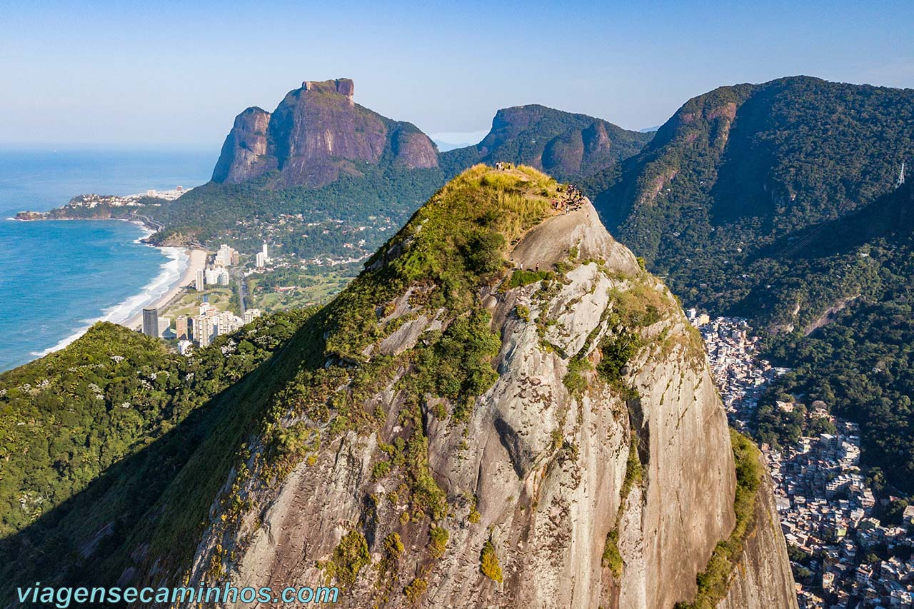

Experience Rio from Above
Explore the most breathtaking hiking trails in the Marvelous City.
Explore TrailsFeatured Trails

Morro Dois Irmãos
One of the most iconic views of Rio. Moderate difficulty.
Pedra do Telégrafo
Famous for the optical illusion photo. Moderate difficulty.

Mirante Dona Marta
The best panoramic view of Christ and Sugarloaf. Easy difficulty.